AST Threading
Theoretical background
AST threading is the process of transforming abstract syntax tree (AST) to control flow graph (CFG). AST is an in-memory representation of program code created using parser. It is shaped by the grammar of the language. Parent nodes are named after their corresponding grammar production names. Node children correspond to production body children, and rules are applied recursively.
While AST representation is suitable for representing text, applying semantic analyses related to types and attaching translation rules for generating code, it is not suitable for static analysis related to dynamic behavior of programs. Analyzing control flow from such simple static structure is not possible.
By transforming static tree structure (AST) into a graph structure that approximates dynamic behavior (CFG) implementing control flow analyses becomes possible. It is said that CFG approximates dynamic program behavior because instead of deducing exact paths taken by a program execution, all theoretically possible paths are considered valid.
CFG is constructed by traversing AST in a mostly left-to-right depth-first manner, with exceptions for control flow statements that require special handling logic. CFG must be constructed using execution semantics of the programming language. Any malformations in regard to execution semantics can yield incorrect analysis results. Such bugs can either cause incorrect later optimization transformations (if CFG is used for optimization) or allow compilation of incorrect programs (if used for semantic analysis).
Warning
Theoretically, CFG can be more conservative than neccessary with soundness property still being satisfied. For a successful practical implementation, conservativeness must be defined in regards to programming language execution semantics.
On the other hand, accidentally conservative approximations, while not as dangerous for correctness, are still a problem as debugging such implementations can be confusing. This is why conservativeness must be properly specified and documented.
TML implementation
TML program global scope contains variable declarations (implicit and explicit form) and function definitions. Function definitions contain statements and expressions. Functions can call other functions, and for purposes of AST threading and later DFA analyses, function calls are inlined.
AST threading is performed in three main phases: 1. Intraprocedural AST threading: Global scope definitions and function bodies are traversed 2. Interprocedural AST threading: Global scope definitions are connect with appropriate entry functions to create a graph that models simulation execution 3. Function call inlining: Function call nodes are replaced with copies of corresponding function bodies
As CFG is a structure that represents execution order of AST nodes, AST nodes can be used as CFG nodes with little to no modification. Implementations can choose whether a separate structure is needed or CFG can be represented over an existing AST. Current TML implementation uses existing AST nodes, with separate links between nodes that represent AST and CFG. A separate node is used as a placeholder for CFG start, as AST and CFG do not have the same start node. While start node of AST is always a node that is an instance of the start symbol from the grammar, with node children having the order they appear in program source code, CFG start node and node order is determined by program execution semantics.
Global scope
Global scope contains variable declarations and function definitions. Both can appear in an arbitrary order in the global scope. As CFG must represent program execution order (which is not possible with AST), variables are traversed before function definitions. Variables are traversed in the order they were declared in the global scope, not regarding function defintions. Function defitions are traversed in the order they appear, not regarding variables.
Note that at the first stage on AST threading full simulation cycle is not formed. Function CFGs are not connected anywhere before cycle is formed.
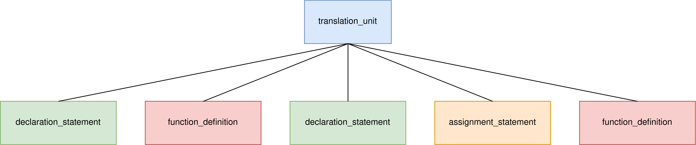
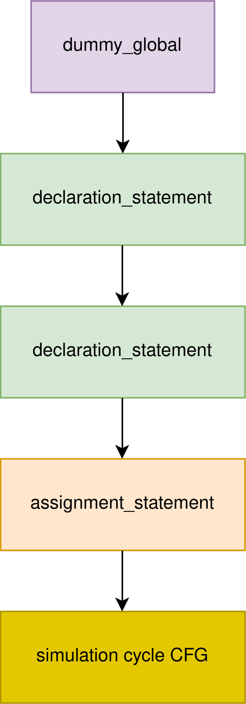
Entry functions and simulation cycle
After CFG is formed for global scope and individual functions, pseudo-while loop is created to represent CFG of component simulation cycle. Loop is called pseudo-while because it does not exist in TML code directly, but is needed as it is later generated by the compiler when the model is compiled. Note that this approach is simplified, as simulation cycle of complete model contains all components. Such simplified model is sufficient for single component analyses and optimizations.
Following images show AST of a program with all entry functions and corresponding CFG after creation of pseudo-while loop. Note that while function definitions of entry functions are inlined, calls to other functions are not yet inlined. From this point forward, functions that are not called by global scope expressions or entry functions (either directly or indirectly) are not present in CFG. As all entry functions are optional as long as all terminals are initialized at the end of simulation cycle, entry functions not present in AST are omitted in CFG.
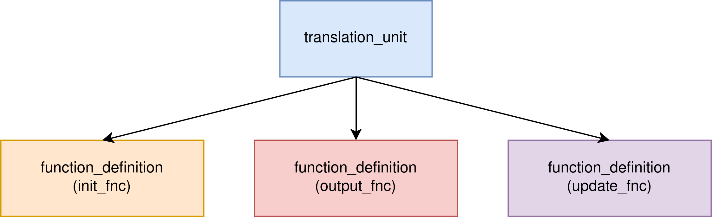
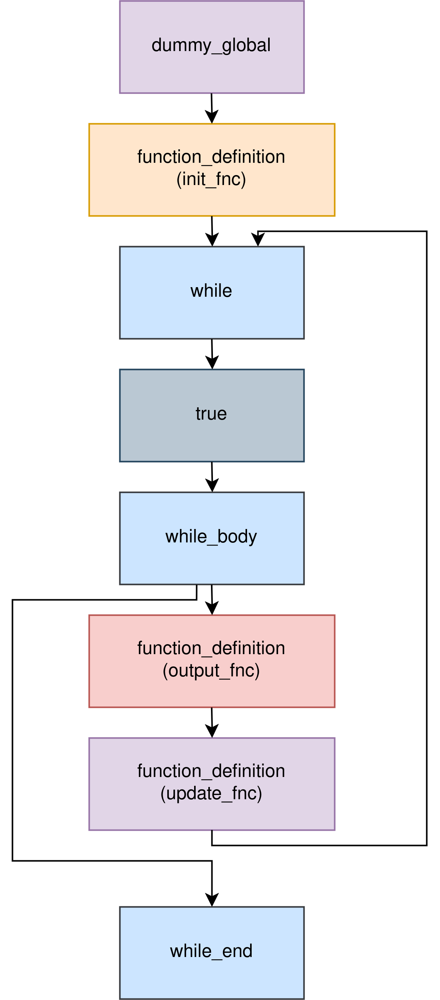
Expressions
Expressions are threaded using generic left-to-right depth-first traverasal of the AST. AST is shaped by the grammar rules of associativity and operator precedence.
Following images show an example of expression AST and corresponding CFG. Expressions that consist of other expressions are illustrated as subtrees with all children for readability. They are serialized in text dumps in tests the same way.
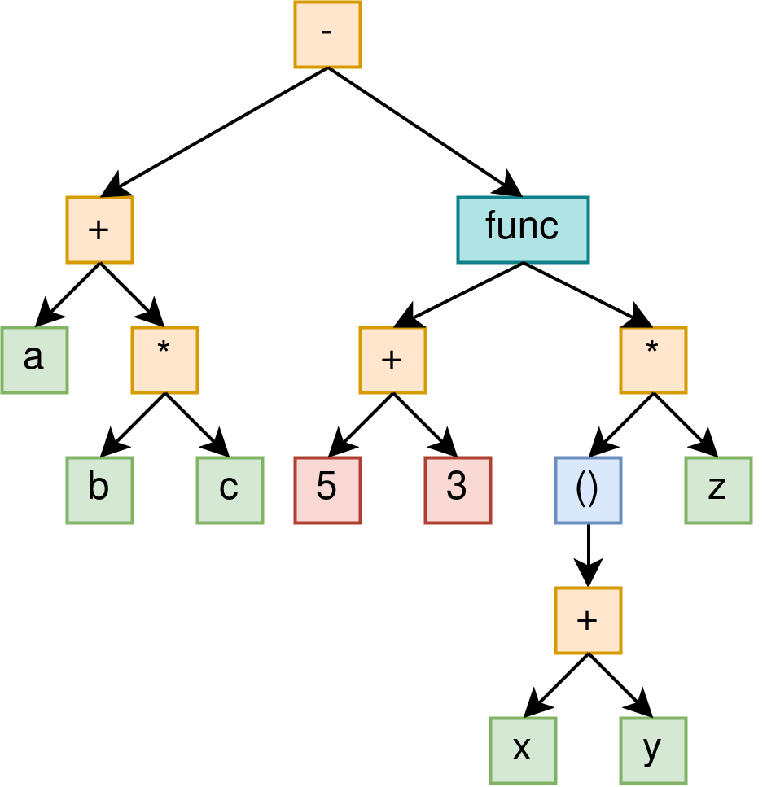
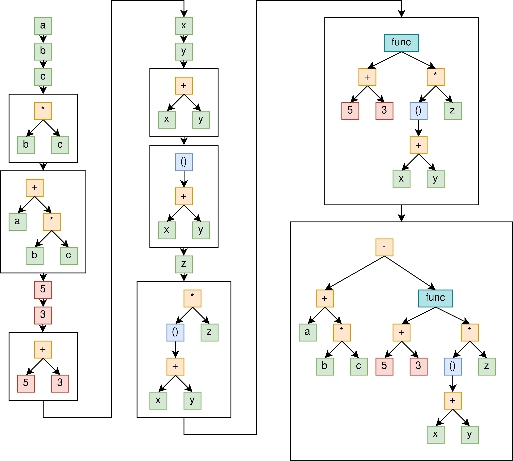
Statements
Unlike expressions, statements cannot be threaded using generic traversal logic, as such traversal would not represent multiple possible execution paths.
When traversing AST, special logic is triggered for statements. Manual handlers create edges that appropriately represent possible execution paths. Additionally, manual handlers introduce helper nodes not present in AST. Helper nodes make later CFG traversal more convenient and can hold additional metadata. Helper nodes also make writing special-case transfer functions easier.
Two main types of helper nodes are start and join nodes. Start nodes represent beginning of control flow statements and function definitions. Join nodes represent end of control flow statements that have multiple possible execution paths. In case of loops, concepts of start and join nodes can overlap. Join nodes have multiple incoming edges but only one outgoing edge. Join nodes have associated join functions that combine inputs into a single output.
Note
Concepts of join functions and join nodes should not be confused. For purposes of many data flow analyses (such as reaching definition analysis), join function is applied on all nodes that have multiple inputs. If those nodes happen to have an associated transfer function, it is applied to joined input state. Concrete implementation details and relation between transfer and join functions are explained in documentation for corresponding analyses.
Note
Special case transfer functions are needed in some analyses, mainly terminal initialization analysis. Unlike simpler analyses such as reaching definition analysis, where there is only one transfer and join function, more complex analyses can have multiple rules depending on the node type. This is a concept relatively unique to TML implementation.
If
Following images show corresponding CFGs of an if, if/else and if/elseif/else
statements.
if statement has one start node (if node) and one join node (join_if node).
As else and elseif clauses are optional, they are potentially not present in CFG.
if/elseif sequences are threaded as if/else with new if neseted inside else
statement block.
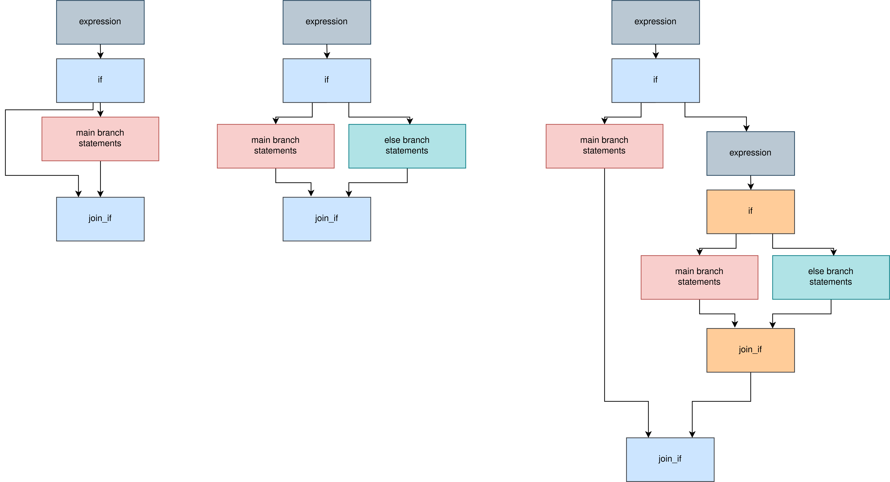
For
Following image shows CFG of a for loop without break statements.
range and iter_var are traversed before entering the loop as corresponding expressions
are evaluated only once before entering the loop.
for is a helper node that acts both as a start and join node. End of loop body is
connected to for node as expression is not evaluated on every loop iteration.
While iteration variable value is updated on every iteration, using current approach
is sufficient for all practical purposes. for node makes later traversal of CFG easier
by making it explicit that multiple outgoing paths need to be traversed.
for_end is a helper end node that acts as a join node also, as it can have multiple
entry paths if break statement is used.
Additionally, for end keeps link to last node of statement block, which may be needed
for non-standard analyses such as terminal initialization analysis.
Statement block is not connected to for_end directly because if no jump statements are
used, for loop is never directly exited before checking loop condition.
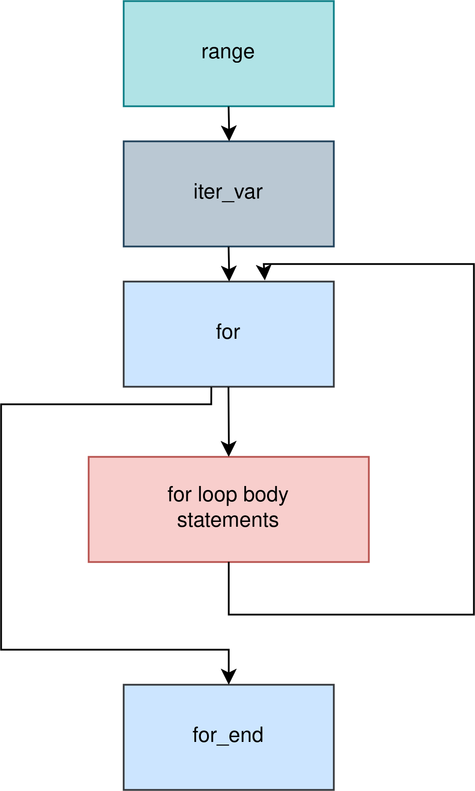
While
Following image shows CFG of a while loop without break statements. Having separate
while and while_body helper nodes is not a theoretical requirement, but is
necessary for easier CFG traversal as terminal analysis requires special join function
for loop start, and determining whether an arbitrary expression node belongs to a
while is not possible directly.
while is a helper node that acts both as a start and join node. End of loop body is
connected to while node as expression is evaluated on every loop iteration.
while_body is a helper start node that makes later traversal of CFG easier by
making it explicit that multiple outgoing paths need to be traversed.
while_end is a helper end node that acts as a join node also, as it can have multiple
entry paths if break statement is used.
Statement block is not connected to while_end directly because if no jump statements are
used, while loop is never directly exited before checking loop condition.
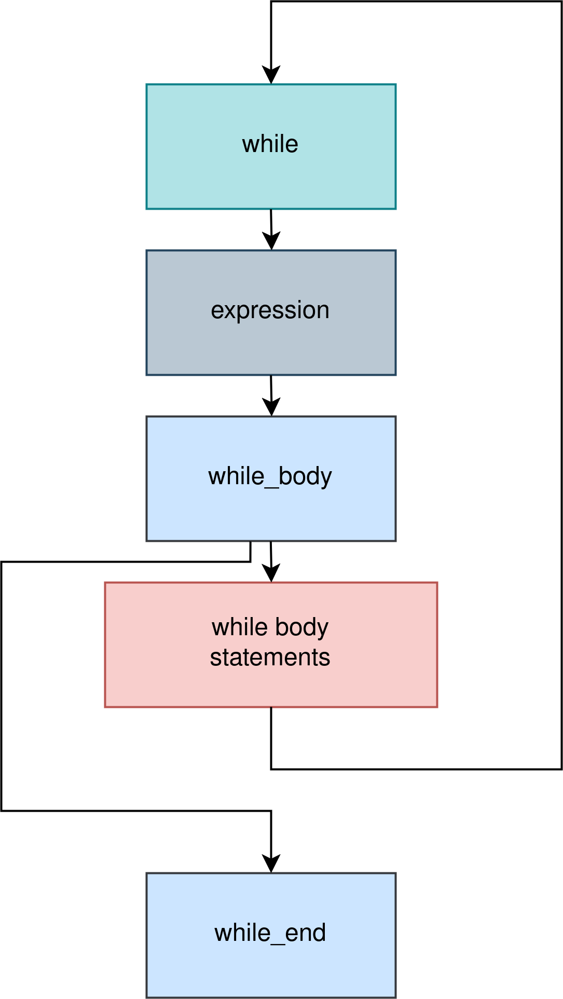
Break
break statement stops execution of a loop at a point and exits immedately.
Following TML execution semantics, break gets connected directly to end node of
the corresponding loop.
Following image shows CFGs of break if for and while loops respectively.
Warning
Red edge represents a bug in AST threading that will be solved in the future.
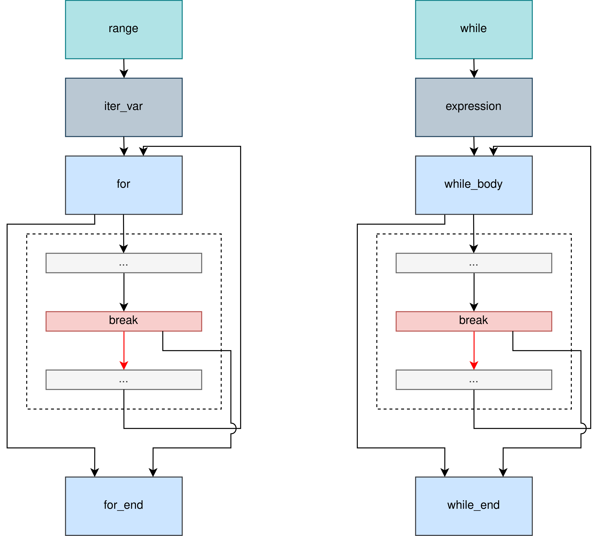
Continue
continue statement stops execution of a loop at a point and starts a new loop iteration,
if loop condition is satisfied after evaluation.
Following TML execution semantics, continue gets connected directly to start node of
the corresponding loop. In the case of while loop, continue is connected to while
and not to while_body as continue requires evaluation of loop condition.
Following image shows CFGs of continue if for and while loops respectively.
Warning
Red edge represents a bug in AST threading that will be solved in the future.
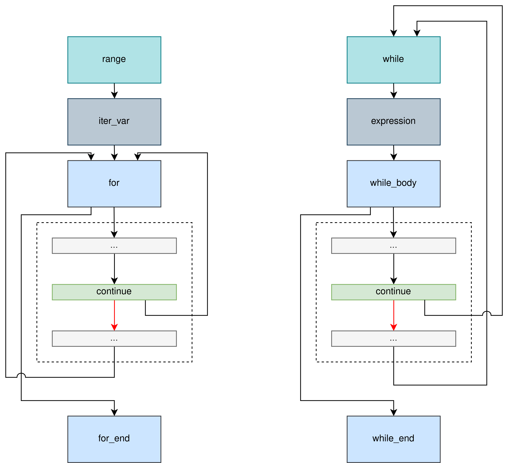
Return
return statement enables either returning a value in non-void functions,
finishing execution before the last statement, or both.
Following TML execution semantics, return gets connected directly to func_exit node.
Follwing image shows CFG of a function with return statement.
Warning
Red edge represents a bug in AST threading that will be solved in the future.
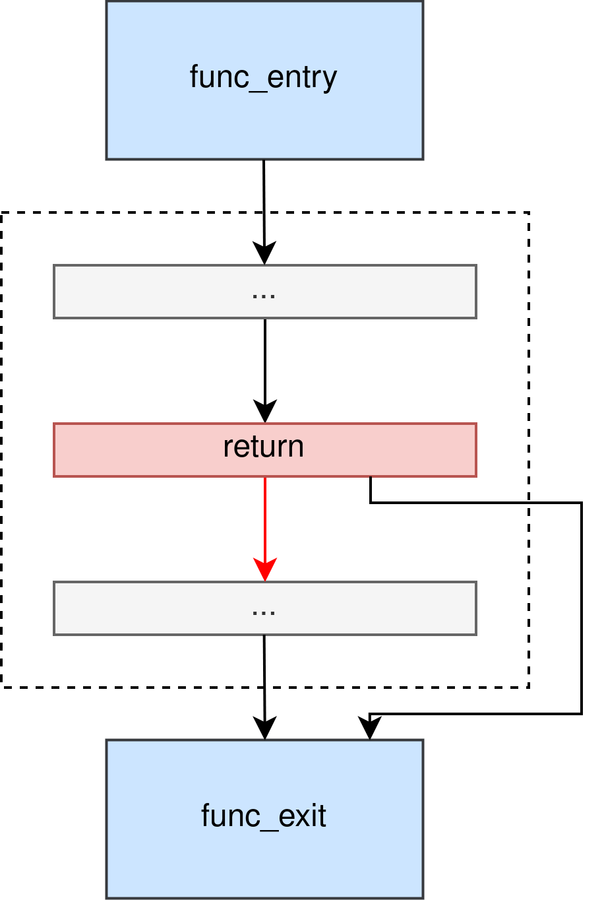
Guard blocks
Guard blocks have mandatory main branch and optional else branch.
Unlike if which is considered as a dynamic control flow statement
(in general case, not considering possibility of static evaluation and pruning),
guard block branches are selected and pruned at compile time.
Following image shows CFG for guard blocks in cases in which either main or else branch
is selected. If no branch is selected (in cases of unreachable blocks or blocks without
else), whole guard block is discarded from CFG.
guard_main and guard_else are helper start nodes. guard_end is a helper end node.
Note that guard_end is not a join node, as it has only one entry.
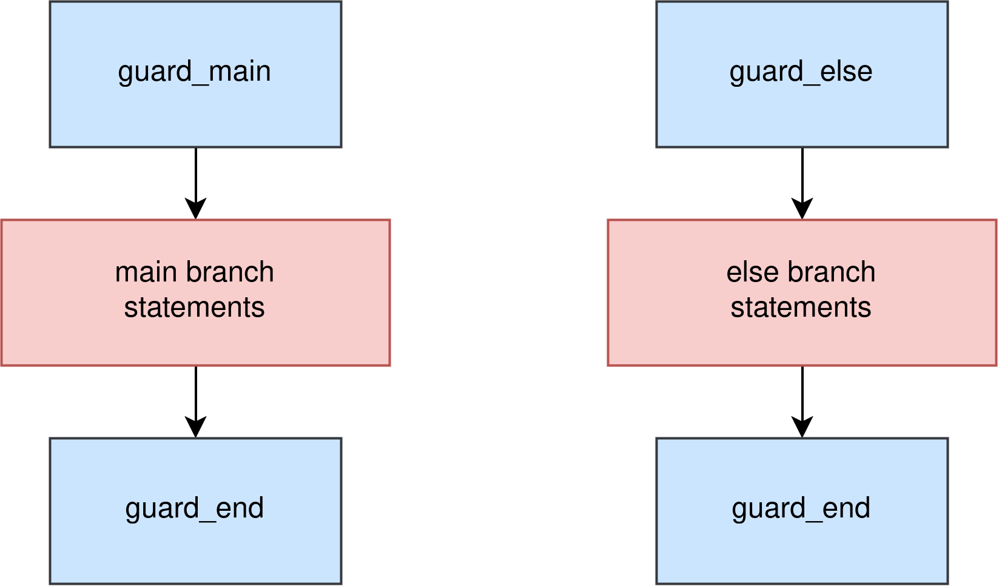
Functions
Following image shows CFG of a function before inlining. Helper node func_entry
is added at the beginning of function CFG, and func_exit is added at the end.
Rest of the function body is threaded using rules for statements and expressions.
Function arguments are currently not connected to the CFG.
Note
While function arguments are not traversed and connected to CFG, argument types and return type are traversed and connected. This does not cause any problems as those node types do not have associated transfer functions. This will be changed in the future.
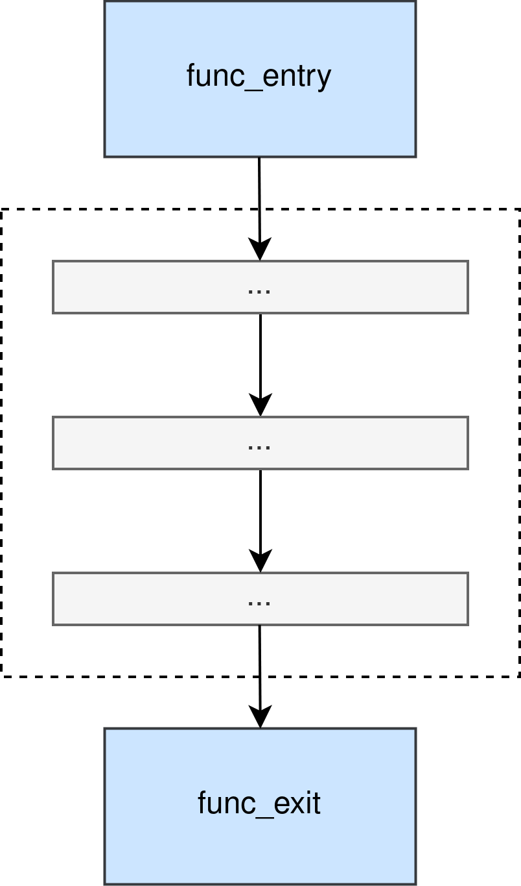
Function inlining
Following image shows function call before and after inlining. As parameters are expressions that do have side effects and associated transfer functions, they are traversed before function call with all rules applied (including function call inlining).
Function calls are inlined by making a copy of original function CFG and by inserting
it in the place of previous function_call node, which gets replaced. CFG must be
copied as different function calls are considered as different instances of inlining.
Function inlining in CFG is necessary for semantic analyses that handle function calls in different context separately, such as terminal initalization analysis. It also enables optimizations such as inlining and function specialization (this is not implemented currently).
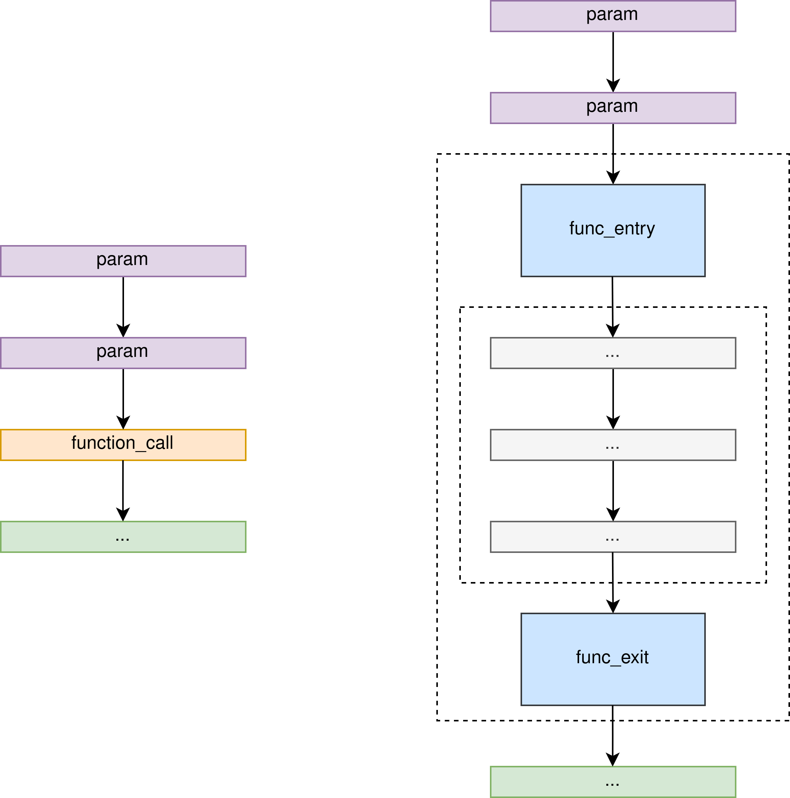